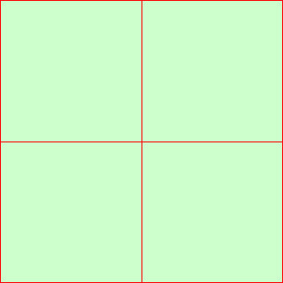
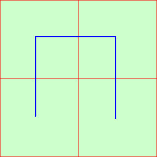
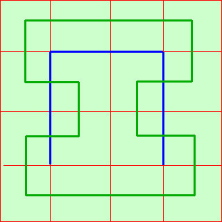
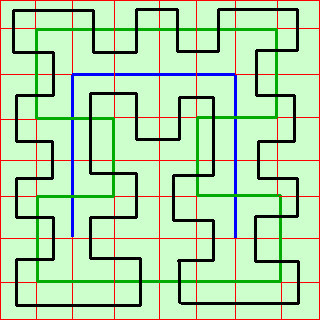

|
sviluppo tracciare il grafico della seguente funzione  Curva di Peano e' una curva capace di ricoprire completamente un quadrato  Per la sua costruzione consideriamo un quadrato nel piano e dividiamolo in 4 quadrati, poi uniamo i centri dei quattro quadratini mediante 3 segmenti Ripetiamo la costruzione in modo da suddividere ogni quadratino ulteriormente in 4 quadrati e ripetiamo il collegamento dei 4 centri con 3 segmenti collegando anche 2 quadratini adiacenti  continuando a suddividere i quadratini e a collegarne i centri copriremo sempre piu' il quadrato finche', al limite, tutto il quadrato sara' ricoperto  |